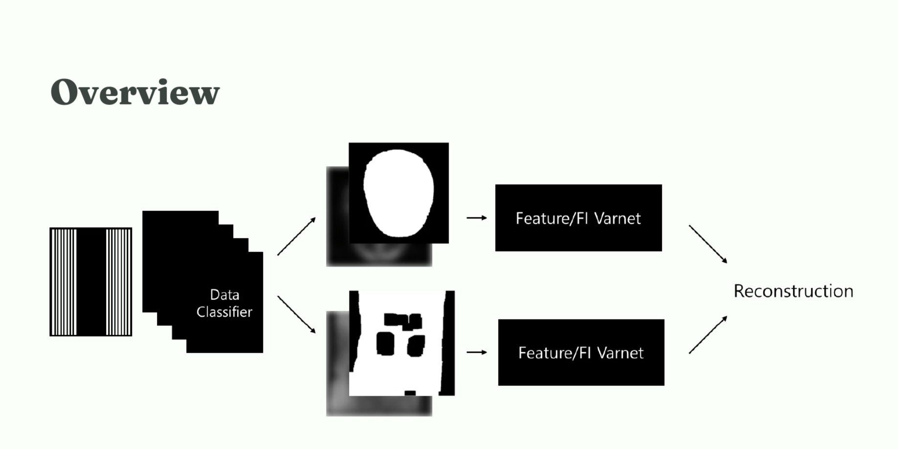

Medical Imaging
Accelerated MRI Reconstruction
SNU FastMRI Challenge · Team 2rm1000 · 2025 · 3rd Place
MRI reconstruction from undersampled k-space using Feature/FI VarNet, acquisition-specific experts, and model averaging.

Method
- Reconstruction. Feature VarNet and FI VarNet combine learned updates with multi-coil sensitivity estimation and data consistency.
- Specialization. Route brain/knee scans to 4× or 8× experts using coil count and sampling-mask information.
- Training and inference. Use MRI-aware augmentation, memory-efficient training, checkpoint averaging, and prediction ensembling.
- Result / status
- 3rd place, 2025 SNU FastMRI Challenge; KRW 2,500,000 team prize.
- My contribution
- Fourier-domain modeling within Team 2rm1000 with Jinseok Choi; the pipeline and submission are team work.
Technical details, figures & code
Measurement-consistent reconstruction
The input is undersampled multi-coil k-space, so plausible appearance alone is insufficient: a reconstruction must remain tied to the acquired measurements. The Feature VarNet and FI VarNet implementations estimate coil sensitivities and combine learned updates with data-consistency operations. FI VarNet also includes image-domain cascades. The design couples a learned image prior to the MRI acquisition model.
Sources: Reconstruction models
Specialization with explicit routing
Brain and knee scans at 4× and 8× acceleration present different reconstruction conditions. The team trained specialized experts for these cases. At inference, coil count identifies the anatomy and the sampling mask determines acceleration, providing a deterministic route to the appropriate model.
Sources: Expert routing and inference
Making the training pipeline practical
The repository provides DeepSpeed-based training, activation-checkpointing configuration, resumable checkpoints, and conversion of distributed checkpoint state into FP32 model weights. MRI-aware augmentation and a warmup/cosine schedule support training. These pieces matter because a useful reconstruction architecture must also fit the available memory and survive interrupted experiments.
Sources: Training and checkpoint handling · Training strategy
Two different forms of averaging
Checkpoint averaging combines compatible parameter tensors into one model; prediction ensembling instead executes separate models and averages their reconstructions. The averaging utility checks parameter names and shapes, while the inference path supports expert-specific model pairs. Keeping these mechanisms separate makes the inference-cost trade-off explicit: weight averaging does not add another model forward pass.
Sources: Parameter averaging · Prediction ensembling
Result and engineering takeaway
Team 2rm1000, with Jinseok Choi, placed third and received a KRW 2,500,000 team prize. The submission brought together measurement-aware models, anatomy-specific inference, and reusable checkpoints in a complete reconstruction pipeline.
Sources: Team submission
Additional figures & demos